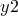
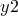

Gridlines may be placed on a plot and subsequently removed via the statements:
set grid set nogrid
respectively. The following commands are also valid:
unset grid unset nogrid
By default, gridlines are drawn from the major and minor ticks of the default  - and
- and  -axes (which are the first - and -axes unless set otherwise in the configuration file; see Chapter 7.1). However, the axes which should be used may be specified after the set grid command:
-axes (which are the first - and -axes unless set otherwise in the configuration file; see Chapter 7.1). However, the axes which should be used may be specified after the set grid command:
set grid x2y2 set grid x x2y2
The top example would connect the gridlines to the ticks of the  - and -axes, whilst the lower would draw gridlines from both the - and the -axes.
- and -axes, whilst the lower would draw gridlines from both the - and the -axes.
If one of the specified axes does not exist, then no gridlines will be drawn in that direction. Gridlines can subsequently be removed selectively from some axes via:
unset grid x2x3
The colours of gridlines can be controlled via the set gridmajcolour and set gridmincolour commands, which control the gridlines emanating from major and minor axis ticks respectively. An example would be:
set gridmincolour blue
Any of the colour names listed in Section 7.6 can be used.
A related command is set axescolour, which has a syntax similar to that above, and sets the colour of the graph’s axes.